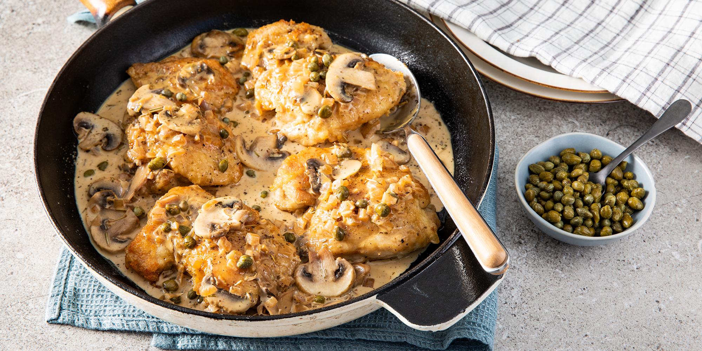

Perfect Chicken

Description
Boneless, skinless chicken breasts (aka BSCBs) — is there anything more boring? They are all
too often overcooked until dry and chewy, and I generally prefer more succulent boneless,
skinless thighs. But for lunch and dinner favorites like chicken Caesar salad and chicken pasta,
sliced juicy chicken breasts can’t be beat. They’re a great staple for quick lunches, too.
Fortunately I have one method that makes unfailingly juicy and tender boneless, skinless
chicken breasts. Need some chicken for a salad, or to top some pasta? This is the method.
It takes some trust, but believe me — it works flawlessly every single time.
This method takes trust; you can’t check the chicken breasts or watch them cooking.
The method isn’t searing, sautéing, broiling, frying, or baking; it heats the chicken breasts
quickly on the stovetop then lets them essentially poach from the inside out in their juices in
a covered pan.
So you can’t peek, and you have to trust us. But I promise that if you follow this method exactly,
you won’t be disappointed.
Ingredients
- 2 cups chicken broth
- ½ cup chopped onion
- 2 cloves garlic, minced
- 1 cup white wine
- ½ cup sliced fresh mushrooms, or more to taste
- 1 teaspoon dried rosemary
- 1 teaspoon dried sage
- 1 cup heavy cream
- 2 tablespoons butter
- ½ lemon, juiced
- 1 tablespoon capers, drained
- ½ cup cornstarch, or as needed
- 4 skinless, boneless chicken thighs
- 2 tablespoons olive oil
Steps
-
Pour the chicken broth into a saucepan with the onion and garlic; bring to a boil and cook at a boil
until the liquid reduces by half, about 10 minutes. Pour in the white wine, return to a boil, and
reduce the liquid by half again, about 10 minutes. Stir in mushrooms, rosemary, and sage; simmer
until the mushrooms are tender and have given up their juice, about 15 more minutes. Stir in cream,
butter, lemon, and capers; reduce heat and simmer the sauce until thickened, about 10 minutes
(45 minutes in all).
- Preheat oven to 350 degrees F (175 degrees C).
-
Place the cornstarch into a shallow bowl and press the chicken thighs into the cornstarch on all sides
until thoroughly coated. Shake off excess cornstarch. Heat the olive oil in a skillet over medium heat;
pan-fry the chicken thighs until they develop a golden brown crust, about 8 minutes per side. Place
the chicken thighs into a 9x9-inch baking dish and pour the sauce over the chicken.
-
Bake in the preheated oven until the sauce is bubbling and the chicken is no longer pink in
the center, about 15 minutes. An instant-read thermometer inserted into the center of a
chicken thigh should read at least 165 degrees F (74 degrees C).